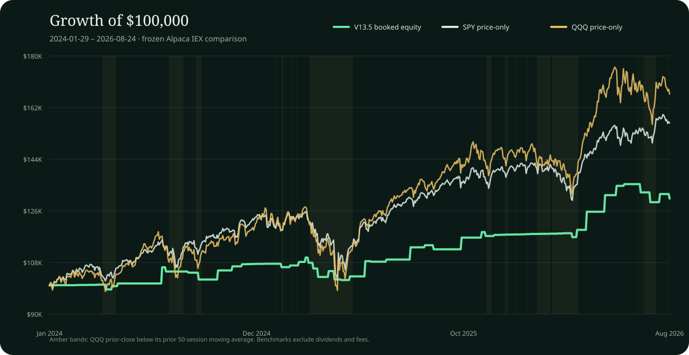

Running on Alpaca paper
Income engineering,
not market guessing.
Stable Income Generator turns a technology conviction into bounded, auditable options decisions—backtested over 644 sessions, containerized by role, and operating against a real Alpaca paper account.
Evidence, not theatre
Three proof layers.
Never blended.
A serious trading system should make it easy to see where every claim comes from. We separate historical research, deterministic system verification, and broker-reported paper behavior.
Frozen and reproducible
V13.5 was selected by a predeclared net-return rule from five QQQ wheel variants. The result is bound to immutable input and output hashes and independently reproduced byte for byte.
Inspect run manifest ↗Executing the lifecycle
The paper scheduler wakes every 60 seconds. Its hash-chained journal recorded five filled orders on September 1: three cash-secured put entries and two deterministic profit-taking closes.
Read the paper runbook ↗Near-live broker evidence
The public account card is now regenerated from Alpaca every five minutes. Equity, P&L, freshness, and filled V13.5 orders come from the broker response—not simulated P&L.
Open live evidence panel ↓Alpaca paper evidence
Five-minute proof.
Zero public credentials.
A scheduled GitHub Actions runner authenticates privately, reads the paper account and closed orders, removes every field we do not intend to publish, and deploys this static evidence with GitHub Pages.
Loading latest deployed snapshot…
Browser checks every 60 seconds · backend target every 5 minutes · marked stale after 15 minutes
Most recent system activity
Last 10 filled V13.5 orders
| Filled | Action | Contract | Qty | Avg fill | System ref |
|---|---|---|---|---|---|
| Sep 1 · 11:42 AM ET | Sell to open | QQQ $704 PUTExpires Sep 8, 2026 | 1 | $2.78 | 805c2262 |
| Sep 1 · 11:41 AM ET | Buy to close | QQQ $702 PUTExpires Sep 8, 2026 | 1 | $2.37 | 771c164a |
| Sep 1 · 10:31 AM ET | Sell to open | QQQ $702 PUTExpires Sep 8, 2026 | 1 | $2.86 | 2dd0bb46 |
| Sep 1 · 10:30 AM ET | Buy to close | QQQ $700 PUTExpires Sep 8, 2026 | 1 | $2.57 | c46ad52f |
| Sep 1 · 10:01 AM ET | Sell to open | QQQ $700 PUTExpires Sep 8, 2026 | 1 | $3.06 | 4f4492d1 |
- 01ScheduleGitHub queues the publisher every five minutes.
- 02Read onlyCredentials are injected from encrypted Actions secrets.
- 03SanitizeAccount values and matching filled system orders survive the allowlist.
- 04HashThe exact public JSON receives a deterministic SHA-256 binding.
- 05DeployGitHub Pages atomically replaces the previous good snapshot.
Paper trading is simulated and is not live-money performance. Scheduled workflows may start later than their target during GitHub load; the page therefore displays the broker timestamp and fails visibly to STALE instead of pretending freshness.
V13.5 benchmark study
A steadier path—not a beta race.
On the same frozen dates, SPY and QQQ earned more total return. V13.5’s case is different: premium income with a materially shallower booked-equity drawdown and a stronger downside-adjusted Sortino ratio.

| Series | Ending value | Return | CAGR | Sharpe | Sortino | Max drawdown |
|---|---|---|---|---|---|---|
| V13.5 | $130,285.80 | +30.29% | +10.81% | 1.14 | 2.44 | −7.15% |
| SPY | $156,629.13 | +56.63% | +19.03% | 1.21 | 1.78 | −18.98% |
| QQQ | $166,709.15 | +66.71% | +21.94% | 1.05 | 1.55 | −22.84% |
QQQ’s deepest price drawdown was 3.2 times V13.5’s booked-equity drawdown in this sample.
V13.5 delivered the strongest Sortino ratio—return earned per unit of downside variation.
V13.5 trailed QQQ’s total return by 36.42 percentage points. Income stability, not maximum upside, is the product objective.
Bull and bear evidence
Adaptive by design.
Resilient in observed stress.
V13.5 changes strike distance using only information available before each decision. It remained positive over the full sample and absorbed the four largest observed QQQ drawdowns above 5% with materially smaller booked-equity moves.
Why we do not say “proven forever.” Downtrend-labeled sessions were negative for V13.5, and the research uses historical option-bar proxies without continuous mark-to-market. A credible income system reports that boundary.
Inside V13.5
One wheel.
Two market postures.
We run QQQ because technology compounds human productivity—and because a liquid index gives the strategy a focused, repeatable operating surface. The expression stays conservative: fully cash-secured puts and share-covered calls only.
Uptrend posture
1%OTM put3%OTM call
Collect more put premium near the rising market while leaving more upside room on covered calls.
Defensive posture
3%OTM put1%OTM call
Move cash-secured puts farther away while bringing calls closer to monetize a more cautious regime.
UniverseQQQ only
Expiry7–14 DTE
Position1 contract
Take profit>15% credit
Daily stop2% drawdown
Determinism + intelligence
The model can stop a trade. It cannot invent one.
The platform’s pinned Gemini 3.6 Flash profile receives sanitized economic context and a semantic proposal. Its output is structurally limited to ALLOW_UNCHANGED or VETO. Missing context, model failure, timeout, or invalid output becomes NO_TRADE.
- 01Daily contextImmutable Alpaca market and news proxies, captured once
- 02Deterministic signalFrozen features and registered strategy logic
- 03Gemini 3.6 FlashSupport unchanged or veto—nothing executable
- 04Exact order planContract, quantity, limit and canonical hash
- 05Independent riskSnapshot-bound approval and execution preflight
- 06Paper executionIdempotent submission, reconciliation and audit
Current-paper boundary
The active V13.5 wheel canary is intentionally deterministic-only while its equity-assignment lifecycle remains separate from the general strategy API. The combined economic/LLM gate is implemented in the broader platform and fixture path; we do not attribute today’s paper P&L to Gemini.
Config-driven infrastructure
Ship the control plane, not a snowflake machine.
Each role has one job, one dependency set, and only the minimum network and secret access it needs. YAML selects strategy and risk behavior; canonical hashes invalidate stale approvals when configuration changes.
strategy:
strategy_id: v13.5
symbols: [QQQ]
minimum_dte: 7
maximum_dte: 14
take_profit_fraction: 0.15
risk:
max_contracts_per_symbol: 1
maximum_daily_drawdown_fraction: 0.02
allow_unmanaged_positions: false
Portable where it matters.
The verified release targets native ARM64—from this M1 Pro development host to Linux/ARM cloud VMs and container runners. Moving the one-shot workers to another scheduler is configuration and operations work, not a strategy rewrite. The current macOS launchd wrapper is replaceable; the contracts, risk logic, broker adapter, and containers remain the portable core.
Judge reproduction
Clone. Verify. Replay.
The default judge path needs no Alpaca or Gemini credentials and cannot place an order. It replays frozen inputs, exposes the read-only API, and proves the deterministic control flow.
1 · Get the exact release
git clone https://github.com/lipengyuan1994/alpaca-hackathon.git
cd alpaca-hackathon
git rev-parse HEAD2 · Install and verify
uv sync --frozen
uv run pytest -q3 · Replay both outcomes
uv run paper-decision-worker
uv run paper-decision-worker --approved4 · Open the read-only API
docker compose -f infra/compose.yaml up --build api
curl http://127.0.0.1:8000/v1/statusWhy Stable Income Generator
Most demos stop at an idea.
Ours closes the loop.
We built the automated system, froze and reproduced the strategy evidence, put V13.5 behind real risk controls, scheduled it against a fresh Alpaca paper account, and published the result—even where the benchmarks win.
- 01 Backtested strategy
- 02 Active paper automation
- 03 Positive dated paper P&L
- 04 Containerized control plane
- 05 Constrained economic intelligence